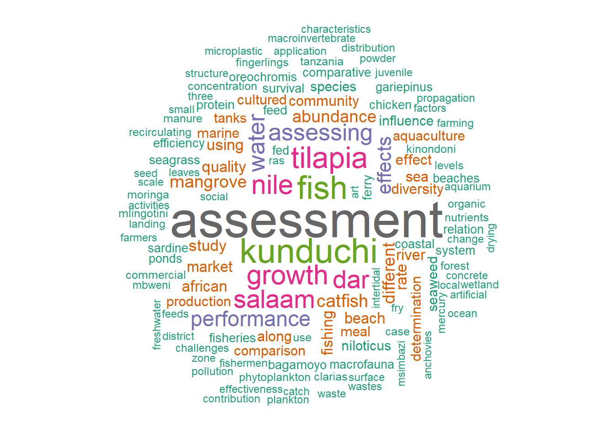

Text analytics and word cloud in R and ggplot2
Introduction
wordcloud is an image composed of words used in a particular text or subject, in which the size of each word indicates its frequency or importance. In this post, we are going to learn how to create worldcloud in R language (R Core Team 2022). To generate wordcloud plot in R, we need either worcloud (Fellows 2018) or wordcloud2 (Lang and Chien 2018) packages. If these packages are not installed in your machine, you can simply download and install them from CRAN as;
Before we proceed, we need to load some packages, whose function we are going to use throughout this post. These packages are highlighted in the chunk below;
Data
In this post we are going to assess third year project student titles. The data has been organized and compiled in Excel spreadsheet. We can load this dataset into R session using read_excel() function from readxl package (Wickham and Bryan 2022) and assign the loaded file as student.
Its a good practise to explore the internal structure of the loaded, though the str function is widely used for years, but Wickham et al. (2022) developed a glimpse function, which provide a nitty approach to look at the data and its associated variables;
Rows: 163
Columns: 5
$ Name <chr> "Rashid Rahma A", "Muller Fransisca L", "Bitoye Mancef C", "Mma…
$ gender <chr> "F", "F", "F", "F", "F", "M", "M", "M", "F", "F", "F", "F", "F"…
$ field <chr> "microbiology", "aquaculture", "ecosystem", "aquaculture", "soc…
$ Title <chr> "Assessing the prevalence and intensity of parasitic infections…
$ year <dbl> 2023, 2023, 2023, 2023, 2023, 2023, 2023, 2023, 2023, 2023, 202…The printed output of the interval structure indicates tha the file has five variables—name, gender, field, title and year. With exception of the year, which is numeric, the other variables are character.
tidy pproject titles
Thereafter, a corpus will be generated from the vector using the Corpus() function of tm package
Cleaning is an essential step to take before you generate your wordcloud. Indeed, for your analysis to bring useful insights, you may want to remove special characters, numbers or punctuation from your text. In addition, you should remove common stop words in order to produce meaningful results and avoid the most common frequent words such as “I” or “the” to appear in the word cloud. If you’re working with a corpus, there are several packages you can use to clean your text. The following lines of code show you how to do this using the tm package.
Create a document-term-matrix
What you want to do as a next step is to have a dataframe containing each word in your first column and their frequency in the second column. This can be done by creating a document term matrix with the TermDocumentMatrix function from the tm package.
Generate the word cloud
The wordcloud package is the most classic way to generate a word cloud. The following line of code shows you how to properly set the arguments. As an example, I chose to work with the student titles on their third year research project at SoAF.
set.seed(1234) # for reproducibility
wordcloud(words = student.word.df$word,
freq = student.word.df$freq,
min.freq = 1,
random.order = FALSE,
max.words = 200,
# rot.per = 0.35,
colors = brewer.pal(8, "Dark2"),
scale = c(3.5,0.4))It may happen that your word cloud crops certain words or simply doesn’t show them. If this happens, make sure to add the argument scale=c(3.5,0.25) and play around with the numbers to make the word cloud fit. Another common mistake with word clouds is to show too many words that have little frequency. If this is the case, make sure to adjust the minimum frequency argument (min.freq=…) in order to render your word cloud more meaningful.
set.seed(1234) # for reproducibility
wordcloud(words = student.word.df$word,
freq = student.word.df$freq,
min.freq = 3,
random.order = FALSE,
# max.words = 1000,
# rot.per = 0.35,
colors = brewer.pal(8, "Dark2"),
scale = c(3.5,0.6))
The wordcloud2 package is a bit more fun to use, allowing us to do some more advanced visualisations. For instance, you can choose your wordcloud to appear in a specific shape or even letter (see this vignette for a useful tutorial). As an example, I used the same corpus of student title and generated the two word clouds shown below. Cool, right?
wordcloud2(data = student.word.df,
size = 0.8,
color = "random-dark",
minSize = 3,
ellipticity = 2,
gridSize = 11)In summary, R language provide myriad package for visualizing not only numeric data but also for textual information and summarize them in plots that are easily to understand. In the next post, we are going to use the approach to visualize textual information using alluvial plots